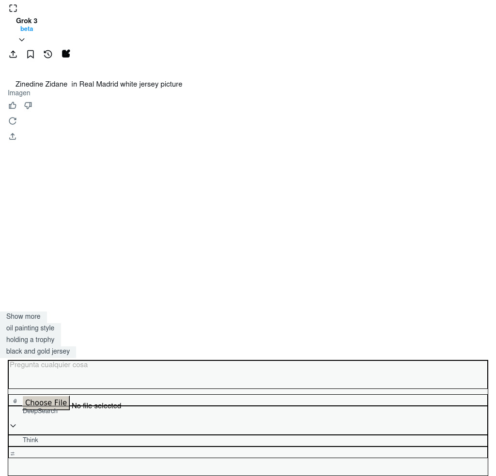

El fútbol ha sido testigo de jugadores excepcionales que han dejado una huella indeleble en el deporte rey. Estas figuras no solo han maravillado con su talento, sino que también han inspirado a generaciones enteras de aficionados y jugadores en todo el mundo.
Pelé - El Rey del Fútbol
Considerado por muchos como el mejor jugador de todos los tiempos, Edson Arantes do Nascimento, conocido mundialmente como Pelé, revolucionó el fútbol con su técnica, visión y capacidad goleadora. El brasileño ganó tres Copas del Mundo (1958, 1962 y 1970) y anotó más de 1,000 goles en su carrera profesional.
A los 17 años, Pelé ya deslumbraba al mundo en el Mundial de Suecia 1958, donde se convirtió en el jugador más joven en marcar en una final. Su combinación de potencia, elegancia y creatividad lo convirtieron en un jugador adelantado a su época.

Diego Maradona - La Mano de Dios
El astro argentino Diego Armando Maradona es sinónimo de genialidad y controversia. Su actuación en el Mundial de México 1986, donde llevó a Argentina al título con actuaciones memorables, especialmente contra Inglaterra en cuartos de final (con el famoso gol de la "Mano de Dios" y el considerado "Gol del Siglo"), cimentó su leyenda.
Maradona tenía un control del balón inigualable, una visión de juego excepcional y una capacidad para decidir partidos que lo convirtieron en ídolo mundial. Su paso por clubes como Boca Juniors, Barcelona y especialmente Napoli, donde es venerado como un dios, demostró que era capaz de cargar equipos enteros sobre sus hombros.
Johan Cruyff - El Profeta del Fútbol Total
El holandés no solo fue un jugador extraordinario, sino también un revolucionario táctico. Como jugador, lideró la naranja mecánica de los años 70 y popularizó jugadas como el "Giro Cruyff". Como entrenador, sentó las bases del estilo que posteriormente adoptaría el Barcelona, influenciando a entrenadores como Guardiola.
Cruyff ganó tres Balones de Oro y, aunque nunca ganó un Mundial (fue finalista en 1974), su influencia en el juego moderno es incalculable. Su filosofía futbolística ha trascendido generaciones y sigue vigente en la actualidad.
Alfredo Di Stéfano - La Saeta Rubia
El argentino-español fue el arquitecto del dominio del Real Madrid en las primeras cinco ediciones de la Copa de Europa. Jugador completo que podía desempeñarse en cualquier posición, Di Stéfano combinaba técnica, inteligencia y una capacidad física extraordinaria.
Su visión de juego y liderazgo lo convirtieron en una figura respetada universalmente. Aunque nunca jugó un Mundial, su impacto en el fútbol de clubes, especialmente con el Real Madrid, lo sitúa entre los más grandes de todos los tiempos.

Zinedine Zidane - Elegancia y Clase
El francés de origen argelino representa la elegancia en el fútbol. Su control del balón, visión y capacidad para decidir partidos importantes lo convirtieron en uno de los mediocampistas más destacados de la historia. Ganó el Mundial de 1998 con Francia, siendo figura en la final contra Brasil con dos goles.
Su carrera también está marcada por momentos controversiales, como su expulsión en la final del Mundial 2006 tras propinar un cabezazo a Marco Materazzi. Como entrenador, continuó su leyenda guiando al Real Madrid a tres Champions League consecutivas.
Lionel Messi - El Extraterrestre
El argentino ha redefinido los límites de lo posible en un campo de fútbol. Con una técnica excepcional, visión de juego privilegiada y una capacidad goleadora asombrosa, Messi ha batido prácticamente todos los récords imaginables. Su consagración definitiva llegó en 2022, cuando lideró a Argentina a la victoria en el Mundial de Qatar.
Durante su etapa en el Barcelona, Messi formó parte de uno de los equipos más dominantes de la historia, ganando múltiples Champions League y estableciendo una rivalidad legendaria con Cristiano Ronaldo que elevó el nivel del fútbol mundial.
Cristiano Ronaldo - La Máquina
El portugués representa la ética de trabajo llevada al extremo. Su dedicación, profesionalismo y hambre de éxito lo han convertido en uno de los mayores goleadores de todos los tiempos. Ganador de cinco Balones de Oro y múltiples Champions League con Manchester United y Real Madrid, CR7 ha demostrado una capacidad única para reinventarse y mantenerse en la élite durante más de 15 años.
Su liderazgo quedó demostrado al guiar a Portugal a la Eurocopa 2016, su primer título internacional importante. El duelo Messi-Ronaldo ha marcado una era dorada del fútbol moderno.
Legado Eterno
Estos jugadores y muchos otros como Franz Beckenbauer, Ronaldo Nazário, Ferenc Puskás o Eusébio han dejado un legado que va más allá de los títulos y estadísticas. Han inspirado a millones, han redefinido lo que significa ser un futbolista y han convertido momentos deportivos en patrimonio cultural colectivo.
Las leyendas del fútbol no solo son recordadas por lo que hicieron dentro del campo, sino por cómo hicieron sentir a los aficionados mientras lo hacían. Sus carreras trascienden el deporte y se convierten en historias que se transmiten de generación en generación.